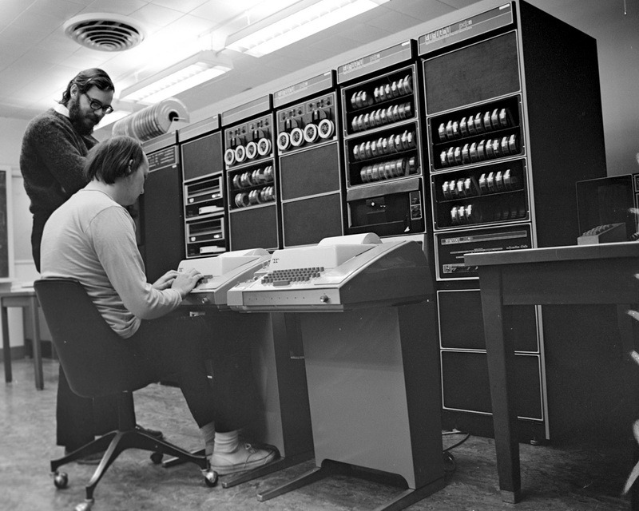

Програмски језик C¶
Развој програмског језика C¶
Програмски језик C је процедурални програмски језик опште намене који су развили Dennis Ritchie и Ken Thompson између 1969. и 1973. године у компанији Bell Labs. Оригинално је развијен за оперативни систем UNIX на PDP-11 и IBM System/370 рачунарима и убрзо прихваћен као подразумевани програмски језик за развој оперативних система и системског софтвера.
{kind=link}
Популарност програмског језика C порасла је 1978. године када су Brian Kernighan и Dennis Ritchie публиковали прво издање књиге The C Programming Language, која је позната међу програмерима као „Бела књига” или „K&R”. Она је уједно била и неформална спецификација овог програмског језика.
Стандардизација програмског језика C¶
Осамдесетих година појавили су се C компајлери за различите хардверске платформе и различите оперативне системе и било је јасно да се језик мора стандардизовати. Амерички национални институт за стандарде (енгл. American National Standards Institute - ANSI) је 1983. године формирао радну групу која је радила до 1989. године и публиковала стандард X3.159-1989 Programming Language C, по којем је ова верзија програмског језика названа ANSI C, стандардни C или C89. Међународна организација за стандарде (енгл. International Organization for Standardization - ISO) усвојила је овај стандард као интернационални 1990. године под називом ISO/IEC 9899:1990 Programming languages – C по којем је ова верзија названа и C90. Стандардизацијом је програмски језик C постао један од најмоћнијих, најбржих и најкоришћенијих програмских језика.
ISO је ревидирао C стандард 1999. године у стандарду ISO/IEC 9899:1999 Programming languages – C (верзија C99), 2011. године у стандарду ISO/IEC 9899:2011 Information technology – Programming languages – C (верзија C11), а последња ревизија десила се 2017. године у стандарду ISO/IEC 9899:2018 Information technology – Programming languages – C (верзија C17). У току писања овог приручника врши се ревизија која ће вероватно бити објављена у стандарду ISO/IEC 9899:2024 (верзија C23).
Како је C најчешће коришћен програмски језик у микро електроници и уграђеним системима, 2003. и 2006. године публиковани су и стандарди за додатке програмском језику C за уграђене процесоре (верзија Embedded C).
Наследници програмског језика C¶
Програмски језик C послужио је као основа за развој нових програмских језика. Од краја седамдесетих до средине осамдесетих година на темељима програмског језика C развијен је програмски језик C++ као објектно-оријентисани програмски језик опште намене који је доживео прву стандардизацију 1989. године. Следили су и Java, JavaScript, C#, Objective-C, Python, Perl, PHP и многи други. Због тога се често називају цеолики језици.